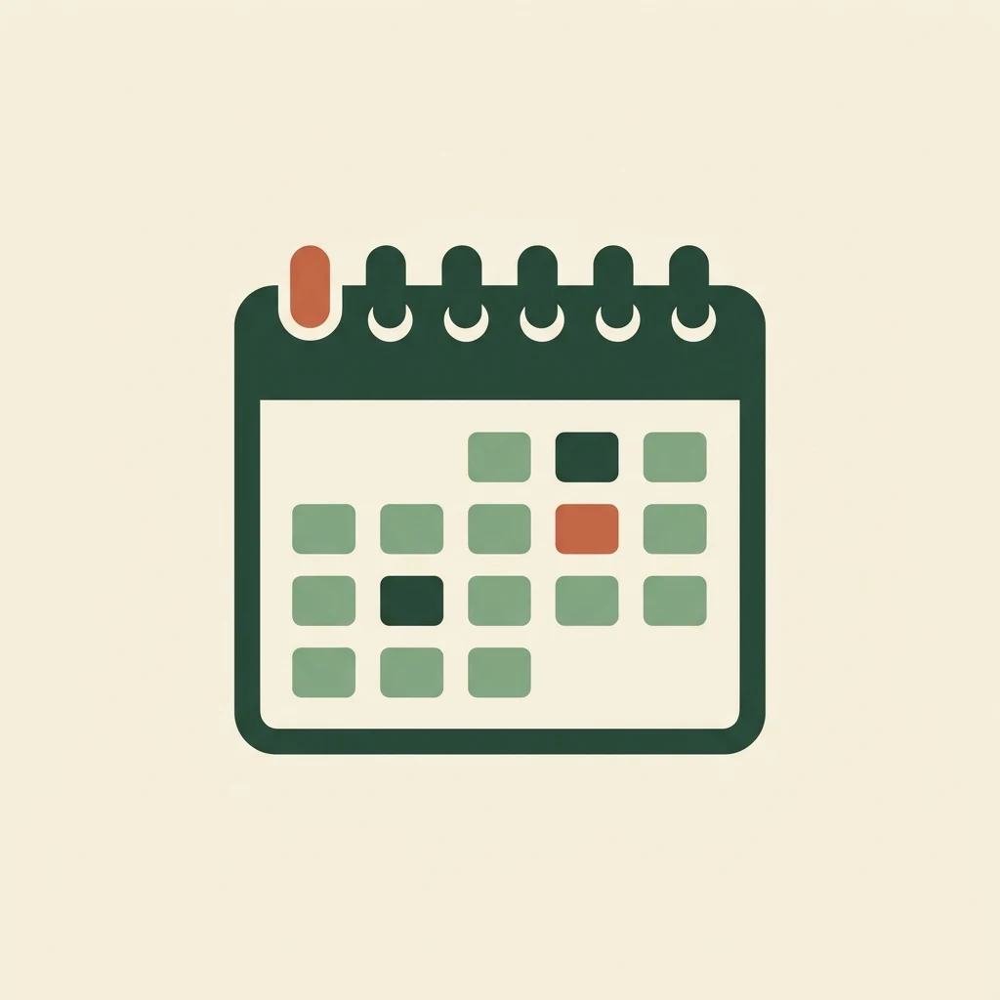
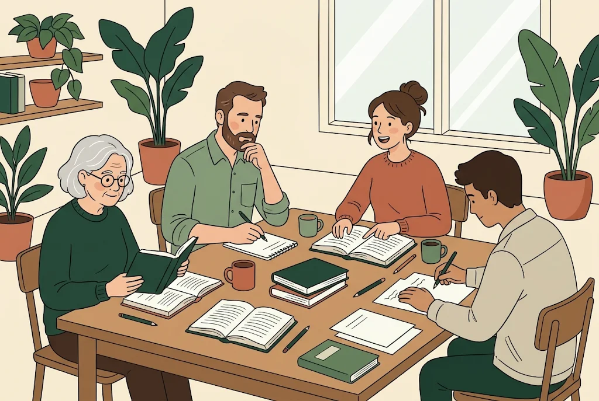
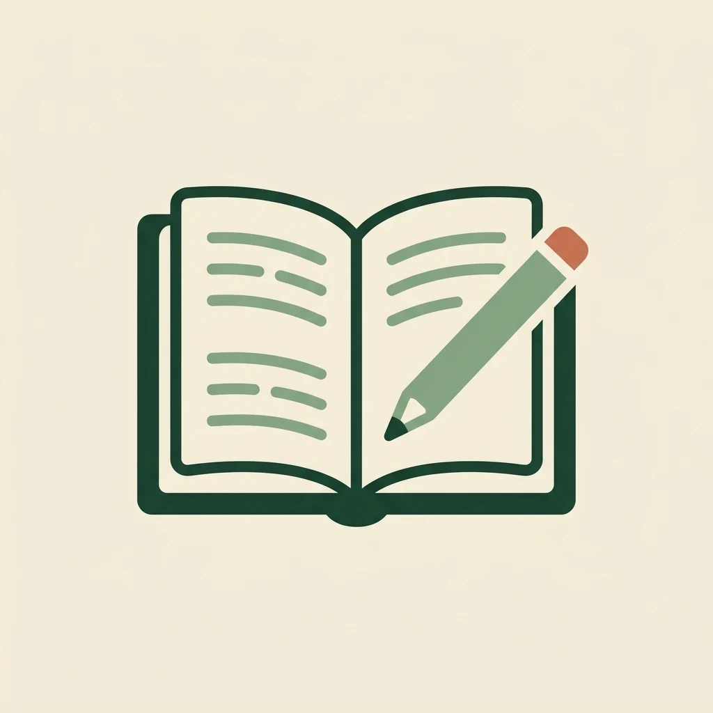

Orientación a la realidad
Calendario, noticias y conversaciones sobre el entorno y la vida cotidiana.
Actividades para personas adultas con enfermedad mental grave. Un espacio para participar, desarrollar habilidades y disfrutar de actividades en compañía.
Ver talleres

Calendario, noticias y conversaciones sobre el entorno y la vida cotidiana.

Propuestas de lectura, prensa y creatividad para trabajar la atención, la memoria y la expresión.

Paseos, baños de bosque y actividad física al aire libre para disfrutar de la naturaleza en grupo.